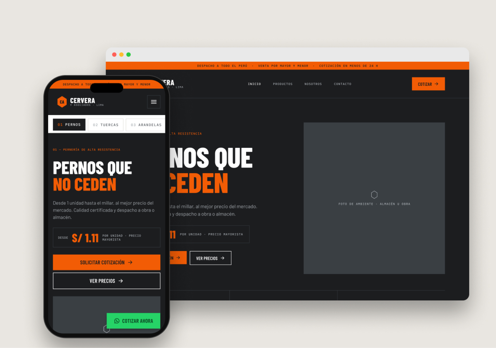
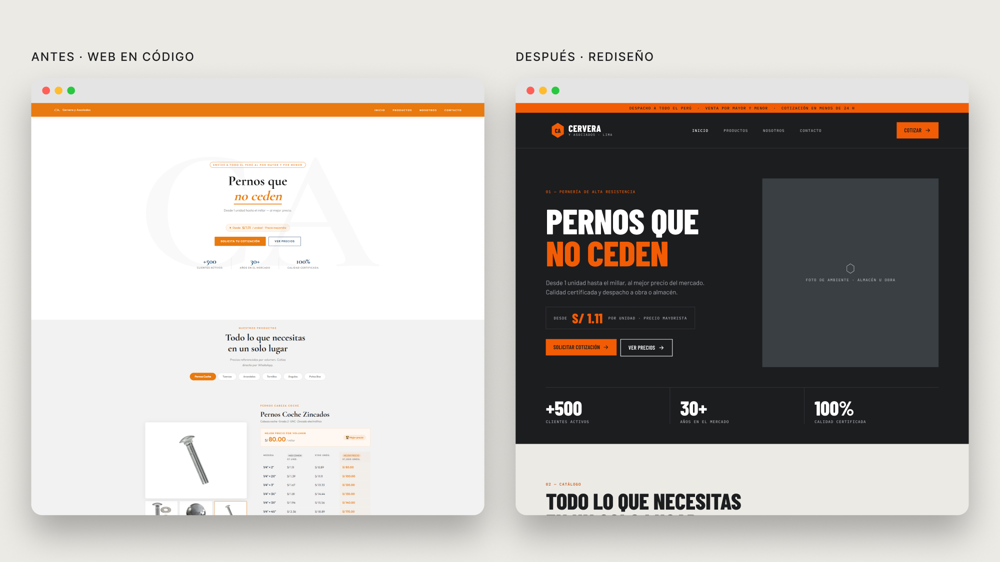
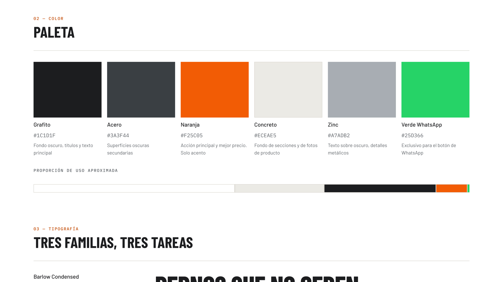
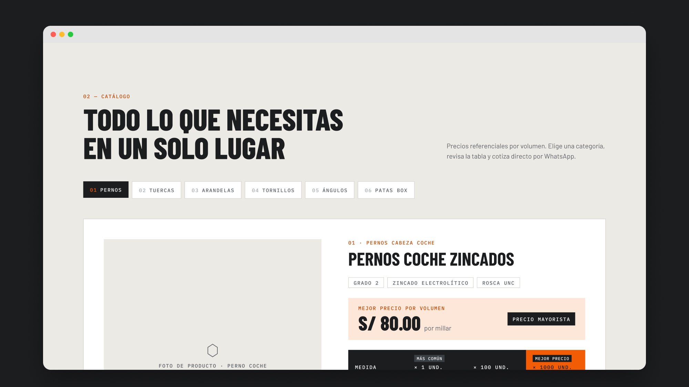
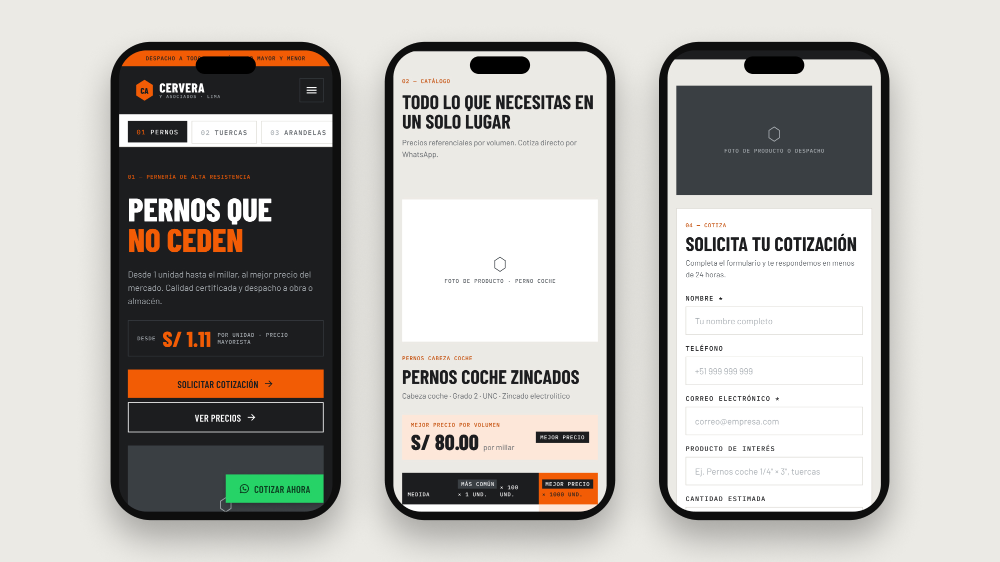
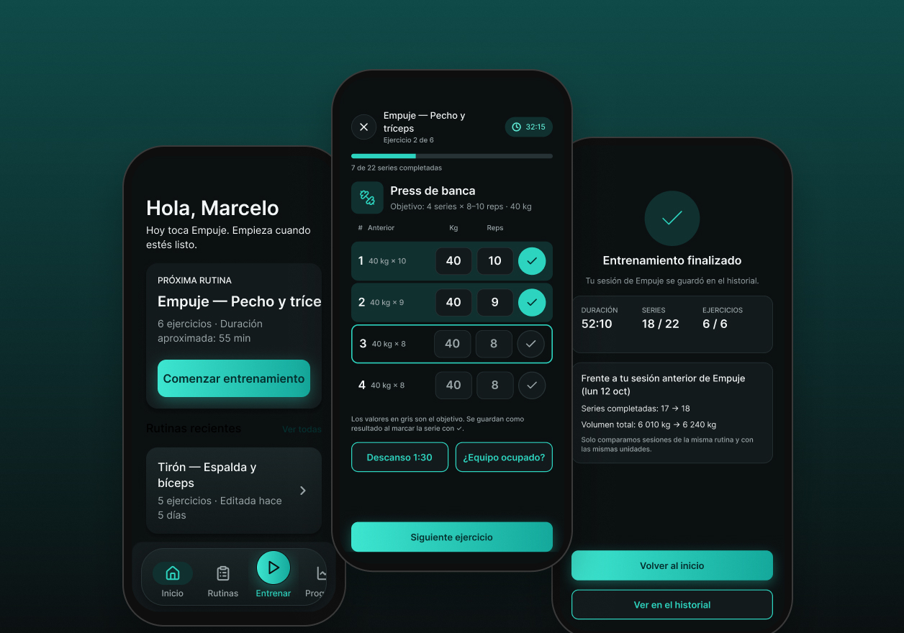

Cervera y Asociados
The landing page of a wholesale bolt distributor in Lima. First I coded it for the client; then, on my own initiative, I redesigned its interface starting from a visual identity that didn't exist before.
Role
UX/UI design and front-end development
Type
Client project
Phase 1
Landing page in HTML, CSS and JavaScript · live and approved by the client
Phase 2
UI redesign in Figma · personal proposal, not implemented

(01) Context
A catalog built for quotes
Cervera y Asociados mainly sells bolts, plus nuts, washers, screws, angle brackets and legs. Each category has its own volume price table, and sales close in WhatsApp conversations.
Goal
Let a buyer find the right size, compare prices by quantity and request a quote in just a few steps.
(02) Phase 1 · The coded site
Phase 1
Design and development
A landing page built for quotes
01
A single file
The landing page is built in HTML, CSS and JavaScript in a single file, and is live at cerverayasociados.com.
02
Volume pricing
Each product shows its price table by quantity (×1, ×100, ×1000) and highlights the best volume price, so the savings of buying more are visible at once.
03
Browsing by category
Tabs on desktop and a sticky category bar on mobile that scrolls horizontally and jumps straight to each product.
04
WhatsApp as the sales channel
A floating “Get a quote” button, a button per product and a quote form: all of them end in a WhatsApp conversation.
05
Always within reach
The header and category bar stay fixed while scrolling, so users can switch products or ask for a quote without going back up.

(03) Phase 2 · UI redesign
Phase 2
Personal proposal · not implemented
Same site, a new voice
When I built the site, the brand had no visual identity, so I designed without a clear personality. The client approved it and it's live, but the result never fully convinced me. So, as my own exercise, I first did the full UI groundwork —an identity for the brand— and only then redesigned the site, keeping every feature.
(04) Identity · Spec sheet
The site of a supplier who knows sizes and shows it
01
Industrial, not luxurious
Condensed type, square corners and thin lines, like a technical drawing. The brand conveys strength, not elegance.
02
Data first
Sizes and prices in monospaced type, aligned in columns so they can be compared at a glance. The table is the star.
03
One accent, one purpose
Orange marks the action and the best price. Green exists only for WhatsApp. If everything stands out, nothing does.

(05) What stayed and what changed
Stayed
The volume price tables for every category.
WhatsApp as the main channel and the floating “Get a quote” button.
The header and category bar fixed while scrolling.
The quote form and the client strip.
Changed
A complete identity: palette, typography, iconography and components.
A single price table template for every category.
Stock photo rules: products cut out on a light background and desaturated settings.
No scroll effects, so the page stays direct and lightweight.
(06) Screens


Hero and sticky categories
Catalog with price table
Quote form
(07) Outcome and learnings
01
Phase 1 · Live
Approved by the client and online at cerverayasociados.com.
02
Phase 2 · My own proposal
A personal learning exercise. The live site didn't change.
UI work doesn't start with screens: if the brand has no visual personality, proposing one is part of the job too.
I learned that research isn't only about understanding what users need. It's also about understanding how the brand should feel. When that identity doesn't exist, it's worth proposing that work before designing: the result gets better.
Next project
